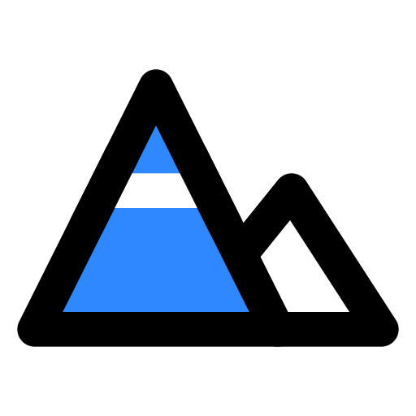
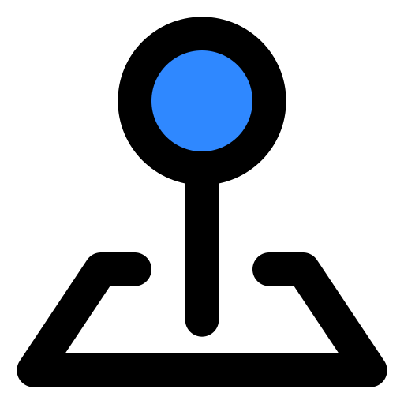
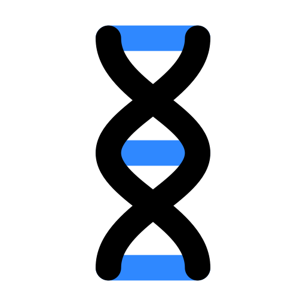
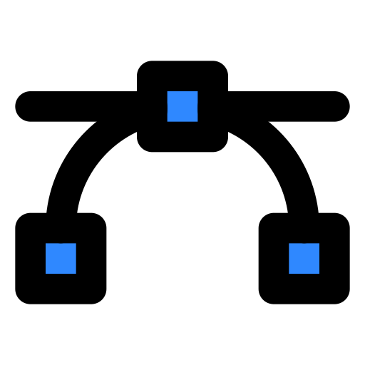
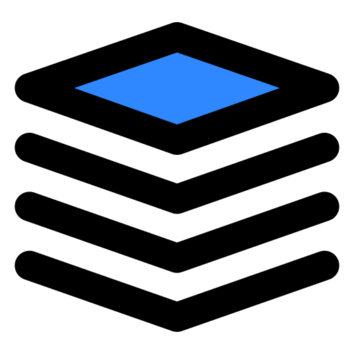
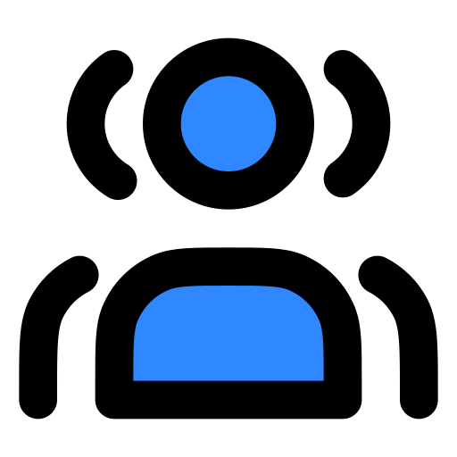
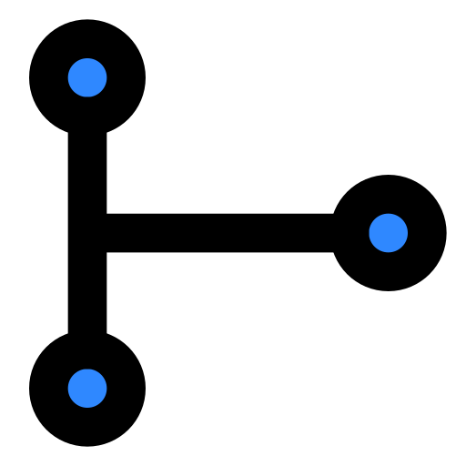
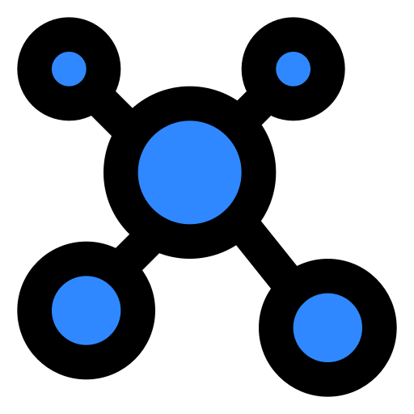
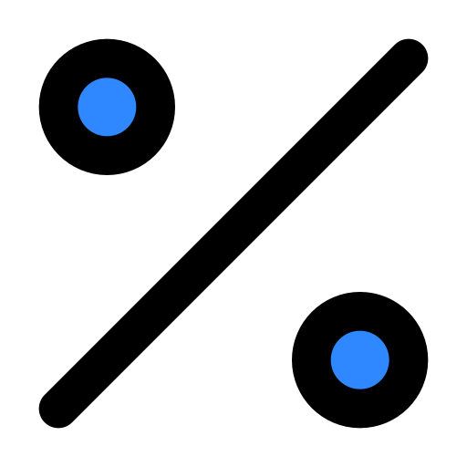

66 icons, lineal-color style. Click a tile name to find the file.

Ackley 3D surface / landscape
ackley-3d-surface.svg

Candidate solution point
candidate-solution-pin.svg
Search space, -5 to 5 per gene
coordinate-system.svg
Ackley function evaluation
function-evaluation.svg
Global minimum
global-minimum-target.svg
Known optimum at the origin
origin-crosshair.svg
Population drawn on the surface
population-on-surface.svg
Search space grid / 2D heatmap
search-space-grid.svg
3D view / rotatable surface
three-d-view.svg
Best individual
best-individual.svg
Bounds handling box
bounds-handling.svg

Genetic algorithm / chromosome
chromosome-dna.svg
One-point cut
cut-point.svg

Gaussian perturbation, bell curve
gaussian-curve.svg
Gene swapping
gene-swap.svg

Generation counter
generation-counter.svg
GA iteration loop
iteration-loop.svg

Mating pool
mating-pool.svg

Child / offspring
offspring-branch.svg

Parent pair
parent-pair.svg
Per-gene mutation
per-gene-mutation.svg
Preserve best solution
preserve-best.svg

Crossover / mutation probability
probability-percent.svg
Random initialization
random-initialization.svg
Ranking individuals
ranking-individuals.svg
Real-valued chromosome (sliders)
real-valued-genes.svg
Resampling / reroll
resampling.svg
Selection probability
selection-probability.svg
Randomisation / shuffle
shuffle.svg